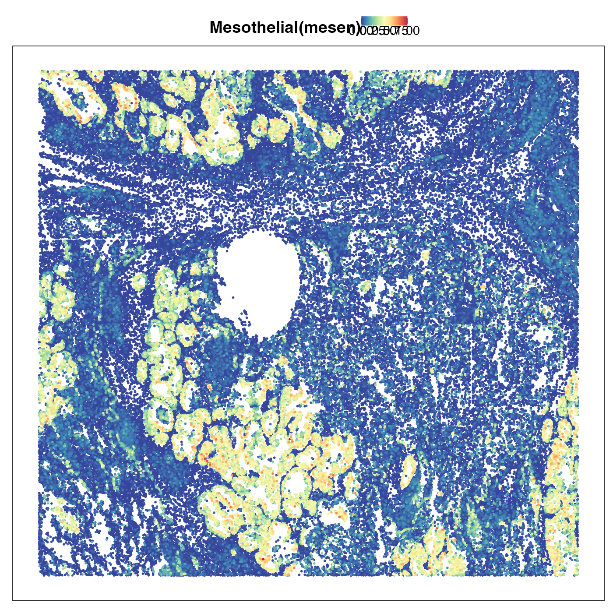
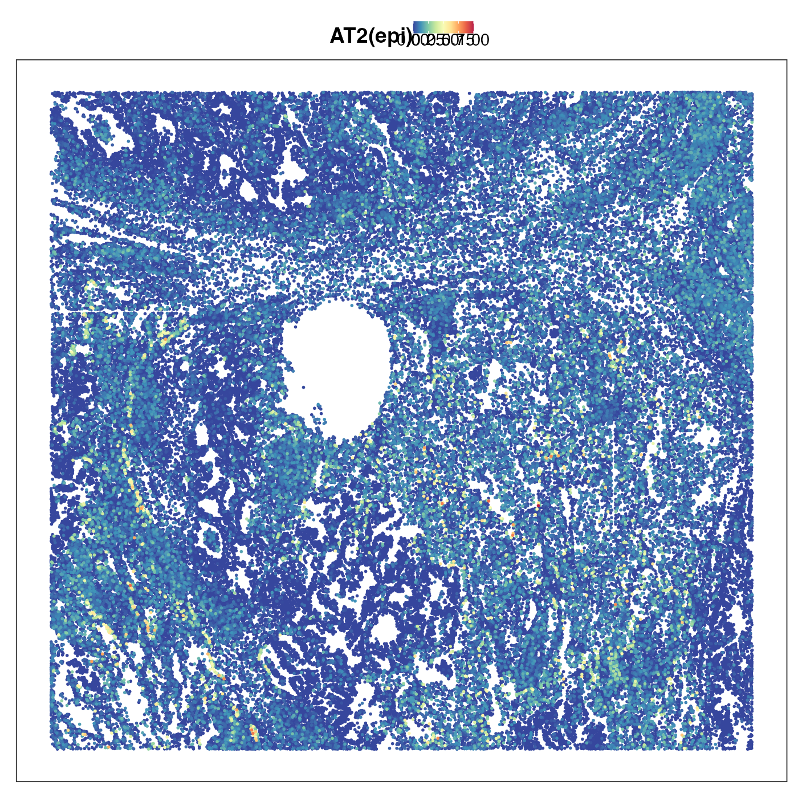
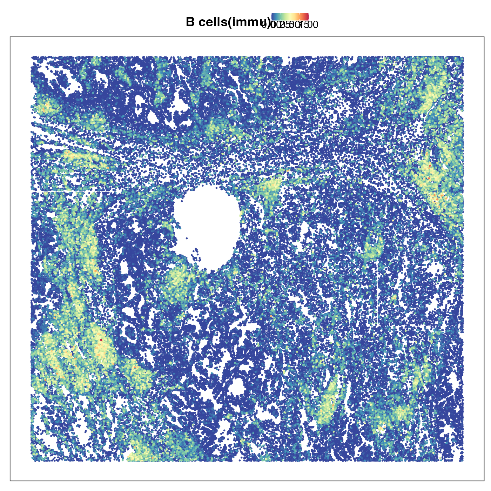
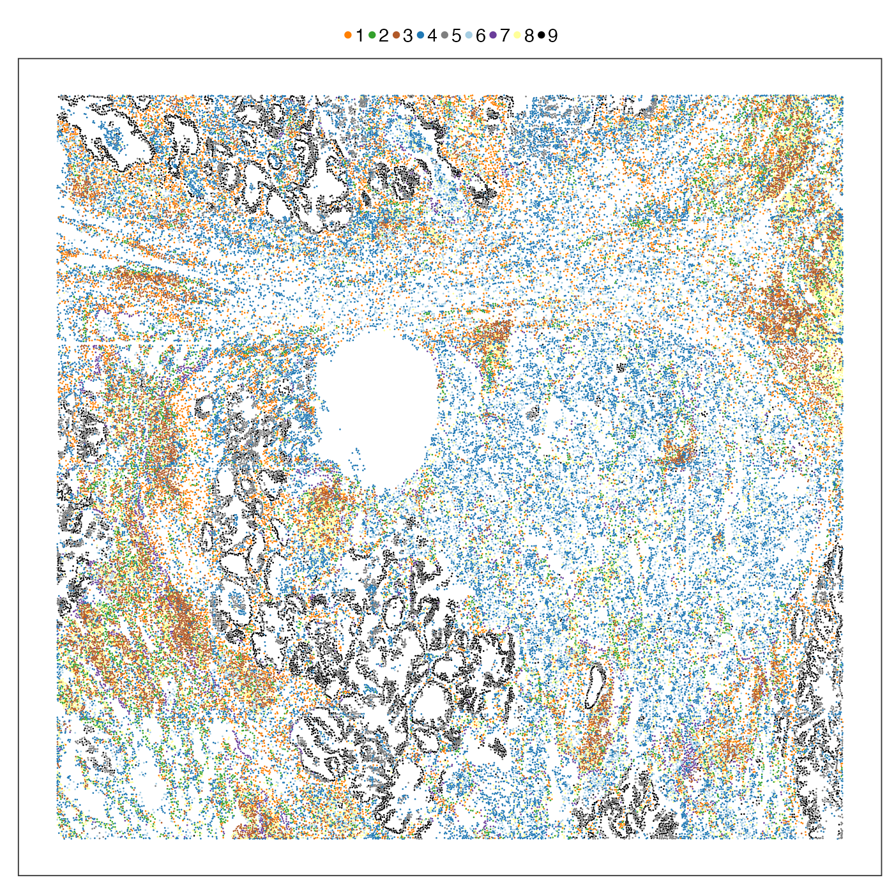

CosMx.RmdAnnotation using multiple references;
Healthy reference annotates cancerous query;
Discovery of spatial niches with diverse cell states.
In this case study, we will apply PhiSpace to drive cell state discovery in lung cancer microenvironment:
Nanotring CosMx is a subcellular spatial transcriptomics (ST) platform. It’s imaging-based and reaches single-molecule resolution, i.e. it produces a long list of mRNA molecules, their corresponding genes and spatial coordinates. Since single-molecules are difficult to analyse directly, we need some level of aggregation. Here since the cell segmentation was available, we aggregated transcripts within each segmented cell. PhiSpace doens’t require cell segmentation to be accurate – it just treats the segmented cells as some form of mini-bulk.
For this case study, we have defined some util functions, which can be downloaded here.
# Name of the game
suppressPackageStartupMessages(library(PhiSpace))
# Tidyverse packages
suppressPackageStartupMessages(library(ggplot2))
suppressPackageStartupMessages(library(dplyr))
suppressPackageStartupMessages(library(magrittr))
suppressPackageStartupMessages(library(ggpubr))
suppressPackageStartupMessages(library(tidyr))
# Other utils
suppressPackageStartupMessages(library(qs)) # Fast read and write of large R objects
suppressPackageStartupMessages(library(ComplexHeatmap)) # Heatmap
suppressPackageStartupMessages(library(seriation)) # Seriation method for clustering rows and columns of heatmap
dat_dir <- "~/Dropbox/Research_projects/PhiSpace/VignetteData/CosMx/" # replace this by your own directory
source(paste0(dat_dir, "CosMx_utils.R"))Load the four reference datasets, which have already been processed and downsampled into sce objects, each contain cells from a lineage (immune, epithelilal, endothelial or mesenchymal). Download thse sce objects from here.
ref_list <- lapply(
c("immune", "epithelial", "endothelial", "mesenchymal"),
function(lineage) qread(paste0(dat_dir, "data/LungFibrosis/", lineage, "_sce.qs"))
)
names(ref_list) <- c("immu", "epi", "endo", "mesen")Lung samples in the query dataset are named Lungx_Repx, denoting lung (patient) and biological replicate. We first showcase the annotation performance of PhiSpace using one particular lung sample Lung5_Rep1, which can be downloaded here.
YtrainName <- "manual_annotation_1"
tissueName <- "Lung5_Rep1"
qs_dir <- paste0(dat_dir, "data/CosMx_lung/", tissueName, "_SCE.qs")
query <- qread(qs_dir)
query <- zeroFeatQC(query)## All features have at least 1 nonzero value.
query <- logTransf(query, use_log1p = TRUE, targetAssay = "log1p")Run PhiSpace using 4 references.
PhiAssay <- "log1p"
PhiResPath <- paste0(dat_dir, "output/CosMxLung5Rep1PhiRes4Refs.qs")
if(!file.exists(PhiResPath)){
sc_list <- vector("list", length(ref_list))
names(sc_list) <- names(ref_list)
for(ii in 1:length(ref_list)){
# Define reference dataset and normalise
lineage <- names(ref_list)[ii]
reference <- ref_list[[lineage]]
reference <- logTransf(reference, targetAssay = PhiAssay, use_log1p = T)
# Run PhiSpace
PhiRes <- PhiSpaceR_1ref(
reference, query,
phenotypes = YtrainName, PhiSpaceAssay = "log1p",
regMethod = "PLS", center = T, scale = F
)
# Extract cell type scores and rename cell types by adding lineage info
sc <- PhiRes$PhiSpaceScore
sc <- normPhiScores(sc)
colnames(sc) <- paste0(colnames(sc), "(", lineage, ")")
sc_list[[lineage]] <- sc
}
qsave(sc_list, PhiResPath)
} else {
sc_list <- qread(PhiResPath)
}Concatenate annotations from 4 references into one and simplify cell type names.
cbindSc <- Reduce(cbind, sc_list)
scNames <- colnames(cbindSc)
scNames <- gsub("immune", "immu", scNames)
scNames <- gsub("epithelial", "epi", scNames)
scNames <- gsub("endothelial", "endo", scNames)
scNames <- gsub("mesenchymal", "mesen", scNames)
colnames(cbindSc) <- scNames
reducedDim(query, "PhiSpace") <- cbindSc
originalNames <- simpleNames <- colnames(reducedDim(query, "PhiSpace"))
simpleNames[c(2, 4, 9, 10, 12, 18, 21, 23, 24, 25, 26, 43)] <- c(
"MoMacroph(immu)", "InflamMono(immu)", "AlveolarMacroph(immu)",
"ProlifImm(immu)", "InterstMacroph(immu)", "ProlifEpi(epi)",
"SecretSCGB3A2+(epi)", "TransAT2(epi)", "SecretSCGB1A1+/MUC5B+(epi)",
"SecretSCGB1A1+/SCGB3A2+(epi)", "DiffCiliated(epi)", "MyoFB Act(mesen)"
)
# Double check if the renaming was correctly done
cbind(originalNames, simpleNames)## originalNames simpleNames
## [1,] "Monocyte(immu)" "Monocyte(immu)"
## [2,] "Monocyte-derived macrophage(immu)" "MoMacroph(immu)"
## [3,] "NK(immu)" "NK(immu)"
## [4,] "Inflammatory monocyte(immu)" "InflamMono(immu)"
## [5,] "moDC(immu)" "moDC(immu)"
## [6,] "B cells(immu)" "B cells(immu)"
## [7,] "cDC1(immu)" "cDC1(immu)"
## [8,] "cDC2(immu)" "cDC2(immu)"
## [9,] "Alveolar macrophage(immu)" "AlveolarMacroph(immu)"
## [10,] "Proliferating - Imm(immu)" "ProlifImm(immu)"
## [11,] "Plasma(immu)" "Plasma(immu)"
## [12,] "Interstitial macrophage(immu)" "InterstMacroph(immu)"
## [13,] "CD4(immu)" "CD4(immu)"
## [14,] "Mast(immu)" "Mast(immu)"
## [15,] "CD8/NKT(immu)" "CD8/NKT(immu)"
## [16,] "pDC(immu)" "pDC(immu)"
## [17,] "AT2(epi)" "AT2(epi)"
## [18,] "Proliferating - Epi(epi)" "ProlifEpi(epi)"
## [19,] "Ciliated(epi)" "Ciliated(epi)"
## [20,] "AT1(epi)" "AT1(epi)"
## [21,] "Secretory - SCGB3A2+(epi)" "SecretSCGB3A2+(epi)"
## [22,] "Basal(epi)" "Basal(epi)"
## [23,] "Transitional AT2(epi)" "TransAT2(epi)"
## [24,] "Secretory - SCGB1A1+/MUC5B+(epi)" "SecretSCGB1A1+/MUC5B+(epi)"
## [25,] "Secretory - SCGB1A1+/SCGB3A2+(epi)" "SecretSCGB1A1+/SCGB3A2+(epi)"
## [26,] "Differentiating ciliated(epi)" "DiffCiliated(epi)"
## [27,] "KRT5-/KRT17+(epi)" "KRT5-/KRT17+(epi)"
## [28,] "PNEC(epi)" "PNEC(epi)"
## [29,] "Venule(endo)" "Venule(endo)"
## [30,] "Arteriole(endo)" "Arteriole(endo)"
## [31,] "Lymphatic(endo)" "Lymphatic(endo)"
## [32,] "Systemic venous(endo)" "Systemic venous(endo)"
## [33,] "aCap(endo)" "aCap(endo)"
## [34,] "gCap(endo)" "gCap(endo)"
## [35,] "Inflamed(endo)" "Inflamed(endo)"
## [36,] "PLIN2+ FB(mesen)" "PLIN2+ FB(mesen)"
## [37,] "MyoFB(mesen)" "MyoFB(mesen)"
## [38,] "Adventitial FB(mesen)" "Adventitial FB(mesen)"
## [39,] "Alveolar FB(mesen)" "Alveolar FB(mesen)"
## [40,] "SMC(mesen)" "SMC(mesen)"
## [41,] "Pericyte(mesen)" "Pericyte(mesen)"
## [42,] "Mesothelial(mesen)" "Mesothelial(mesen)"
## [43,] "MyoFB - Activated(mesen)" "MyoFB Act(mesen)"
colnames(reducedDim(query, "PhiSpace")) <- simpleNamesFirst we visualise the spatial distribution of some cell types. The first plot shows spatial domains (called ‘niche’ in metadata) defined by He et al. (2022). It shows a typical lung cancer microenvironment, where we have tumour surounded by normal stroma with ‘islands’ of immune cells forming tertiary lymphoid structure.
Next we plot transitional alvelolar type 2 cells (TransAT2). This is a type of lung stem cells and a possible orgin of lung ardenocarcinoma (LUAD). As we can see the tumour region showed strong TransAT2 identity, which probably reflected LUAD’s origin. Interestingly, the tumour region also exhibited very strong mesothelial cell identity. Mesothelial is usually not the cell type giving rise to LUAD, but the presence of this cell type identity might reflect the so-called epithelial-to-mesenchymal transition (EMT). EMT allows the tumour cells originated from epithelial cells to lose their epithelial characteristics (e.g. cell-cell adhesion) and be ready for metastasis. We then visualised the distribution of AT2 cells, which was scattered in stromal region but not in tumour region. This emphasises that the AT2 identity we previouly saw in tumour region is really transitonal instead of non-transitional.
Lastly we plotted two common types of immune cells, CD4 T and B cells. Their territories overlapped a lot and both tended to form island-like lymphoid structures. This makes perfect sense as we know that T and B cells are very common in these lymphoid structures.
VizSpatial(query, "sdimx", "sdimy", ptSize = 1, groupBy = "niche", legend.position = "top", legend.symb.size = 2) +
scale_colour_manual(values = nicheCol)
VizSpatial(query, "sdimx", "sdimy", ptSize = 1, reducedDim = "TransAT2(epi)", censor = T, legend.position = "top", reOrder = T)
VizSpatial(query, "sdimx", "sdimy", ptSize = 1, reducedDim = "Mesothelial(mesen)", censor = T, legend.position = "top", reOrder = T)
VizSpatial(query, "sdimx", "sdimy", ptSize = 1, reducedDim = "AT2(epi)", censor = T, legend.position = "top", reOrder = T)
VizSpatial(query, "sdimx", "sdimy", ptSize = 1, reducedDim = "CD4(immu)", censor = T, legend.position = "top", reOrder = T)
VizSpatial(query, "sdimx", "sdimy", ptSize = 1, reducedDim = "B cells(immu)", censor = T, legend.position = "top", reOrder = T)
It is very encouraging to see how a simple spatial heatmap can alreay be so informative. Since the distribution of different cell types show such diverse spatial distributions, why can’t we use them to define spatial niches? Here we simply cluster the PhiSpace cell type scores into 9 clusters to match the number of spatial domains defined by He et al. (2022). As we see below, these clusters correspond well to the domains defined by He et al. (2022), but with more subtlety. In particular, our PhiSpace clustering seemed to idnetify two niches within the ‘tumour interior’ domain of He et al. (2022).
clustResPath <- paste0(dat_dir, "output/Lung5_Rep1_PhiClusts4Refs.qs")
if(!file.exists(clustResPath)){
PhiPCRes <- getPC(
reducedDim(query, "PhiSpace"), ncomp = ncol(reducedDim(query, "PhiSpace")) - 1
)
plot(1-PhiPCRes$accuProps)
mat2clust <- PhiPCRes$scores[,1:25]
set.seed(94863)
clust_res <- kmeans(
mat2clust, centers = 9, iter.max = 200L, nstart = 50
)
qsave(clust_res, clustResPath)
} else {
clust_res <- qread(clustResPath)
}
query$PhiClust <- as.character(clust_res$cluster)
tempClustCols <- c(
"1" = "#FF7F00", "2" = "#33A02C", "3" = "#B15928", "4" = "#1F78B4",
"5" = "gray50", "6" = "#A6CEE3" , "7" = "#6A3D9A", "8" = "#FFFF99", "9" = "black"
)
VizSpatial(
query, x_coord = "sdimx", y_coord = "sdimy", groupBy = "PhiClust", ptSize = 0.5
) + scale_colour_manual(values = tempClustCols) +
guides(
colour = guide_legend(
override.aes = list(size = 2), nrow = 1
)
) +
theme(
legend.title = element_text(face = "bold"),
legend.position = "top",
legend.key.spacing = unit(0, "pt")
) +
labs(colour = "") 
# Comparison of spatial domains defined by He et al. (2022) and spatial niches defined by PhiSpace
nicheClust <- table(query$niche, query$PhiClust) %>% t %>% as.data.frame.matrix()
nicheClust %>% as.data.frame() %>%
mutate(
cluster = rownames(nicheClust) %>% as.factor()
) %>% pivot_longer(
! cluster, names_to = "niche", values_to = "counts"
) %>% ggplot(aes(y = cluster, x = counts)) + geom_col(aes(fill = niche), position = "fill") +
scale_fill_manual(values = nicheCol) +
theme_bw(base_size = 12) +
theme(
legend.position = "none"
) + ylab("PhiSpace clusters") + xlab("Proportions")It turns out that our clustering split the ‘tumour interior’ domain of He et al. (2022) into two niches with different cell type divergence. The motivation for defining cell type divergence is that some tissue entities such as tumour and lymphoid structure tend to show a higher divergence of cell types. This is because tumour is usually transcriptionally more active compared to normal tissue (these rebel cells are busy surviving!); lymphoid sturctures are packed with crowds of small immune cells. How do we measure divergence? With PhiSpace it’s easy. We simply compute, within each cell-like object (in this case segmented cell), the 75% quantile of all PhiSpace cell type scores. This is because if a cell-like object has a range of different cell type identities, then it should also have a higher 75% quantile of scores. (This definition is actually inspired by RLE plot developed by our wonderful WEHI colleagues, which is used in a completely different context but based on the same principle.)
query$divergence <- apply(reducedDim(query, "PhiSpace"), 1, quantile, prob = 0.75)
VizSpatial(
query, "sdimx", "sdimy", ptSize = 0.5, groupBy = "divergence", reOrder = T, fsize = 12
) +
scale_colour_stepsn(colours = PhiSpace:::MATLAB_cols, values = c(0, 0.25, 0.5, 0.75, 1)) +
theme(legend.position = "bottom")## Scale for colour is already present.
## Adding another scale for colour, which will replace the existing scale.Next we visualise the PhiSpace-niche-specific cell type divergence. Recall that niches 5 and 9 are both located in the ‘tumour interior’ domain. Here we can see that these two niches have very different cell type divergence. For more analysis along this line see our PhiSpace ST paper.
query@colData %>% ggplot(aes(y = PhiClust, x = divergence)) +
geom_boxplot(aes(fill = PhiClust), outlier.size = 0.5, linewidth = 0.1, outlier.stroke = 0) +
theme_bw(base_size = 12) +
theme(
legend.position = "none"
) + scale_fill_manual(values = tempClustCols) +
ylab("PhiSpace Niches") + xlab("Divergence")After focusing on a particular lung cancer sample, now we use PhiSpace to do a multi-sample analysis, using all lung cancer samples in the CosMx dataset.
Load all query lung samples, which can be downloaded here. Also load the precomputed PhiSpace annotation results to save RAM.
tissueNames <- tissueNames_CosMx
query_list <- vector("list", length(tissueNames)) %>% `names<-`(tissueNames)
PhiResPath <- paste0(dat_dir, "output/CosMxAllLungsPhiRes4Refs.qs")
sc_list <- qread(PhiResPath)
for(ii in 1:length(tissueNames)){
tissueName <- tissueNames[ii]
qs_dir <- paste0(dat_dir, "data/CosMx_lung/", tissueName, "_SCE.qs")
query <- qread(qs_dir)
query <- zeroFeatQC(query)
query <- logTransf(query, use_log1p = TRUE, targetAssay = "log1p")
sc4Refs <- lapply(sc_list, function(x) x[[tissueName]])
cbindSc <- Reduce(cbind, sc4Refs)
scNames <- colnames(cbindSc)
scNames <- gsub("immune", "immu", scNames)
scNames <- gsub("epithelial", "epi", scNames)
scNames <- gsub("endothelial", "endo", scNames)
scNames <- gsub("mesenchymal", "mesen", scNames)
colnames(cbindSc) <- scNames
reducedDim(query, "PhiSpace") <- cbindSc
query_list[[ii]] <- query
}## All features have at least 1 nonzero value.All features have at least 1 nonzero value.All features have at least 1 nonzero value.All features have at least 1 nonzero value.All features have at least 1 nonzero value.All features have at least 1 nonzero value.All features have at least 1 nonzero value.All features have at least 1 nonzero value.
originalNames <- simpleNames <- colnames(reducedDim(query_list[[1]], "PhiSpace"))
simpleNames[c(2, 4, 9, 10, 12, 18, 21, 23, 24, 25, 26, 43)] <- c(
"MoMacroph(immu)", "InflamMono(immu)", "AlveolarMacroph(immu)",
"ProlifImm(immu)", "InterstMacroph(immu)", "ProlifEpi(epi)",
"SecretSCGB3A2+(epi)", "TransAT2(epi)", "SecretSCGB1A1+/MUC5B+(epi)",
"SecretSCGB1A1+/SCGB3A2+(epi)", "DiffCiliated(epi)", "MyoFB Act(mesen)"
)
for(ii in 1:length(query_list)){
query <- query_list[[ii]]
colnames(reducedDim(query, "PhiSpace")) <- simpleNames
query_list[[ii]] <- query
}We use PLSDA (partial least squares discriminant analysis) to identify cell types that are most enriched in different spatial niches within different samples. This allows us to compare tumour heterogeneity across samples.
tumourSig <- tumourSig_indiv <- regCoef_list <- regCoefIndiv_list <- vector("list", length(tissueNames)) %>%
`names<-`(tissueNames)
for(ii in 1:length(tissueNames)){
tissueName <- tissueNames[ii]
query <- query_list[[tissueName]]
Y <- codeY(query, "niche")
X <- reducedDims(query)[["PhiSpace"]]
ncomp <- ncol(Y) - 1
pls_res <- mvr(X, Y, ncomp = ncomp, method = "PLS")
regCoef <- pls_res$coefficients[,,ncomp]
regCoef_list[[ii]] <- regCoef
selectedPheno <- selectFeat(regCoef, nfeat = 5, absVal = F)
tumourSig[[ii]] <- selectedPheno$orderedFeatMat[,"tumor interior"]
}Top five enriched cell types in different tumours. The results make a lot of sense. First we see that the cell states of tumours from biological replicates (e.g. Lung5_Rep1, Lung5_Rep2, Lung5_Rep3) are very similar. But tumour cell states from different patients tend to be more different. See our PhiSpace ST paper for more detailed analysis on this result.
| Lung5_Rep1 | Lung5_Rep2 | Lung5_Rep3 | Lung6 | Lung9_Rep1 | Lung9_Rep2 | Lung12 | Lung13 |
|---|---|---|---|---|---|---|---|
| Mesothelial(mesen) | Mesothelial(mesen) | Mesothelial(mesen) | Basal(epi) | Mesothelial(mesen) | Mesothelial(mesen) | Adventitial FB(mesen) | Mesothelial(mesen) |
| Basal(epi) | SecretSCGB1A1+/MUC5B+(epi) | Basal(epi) | MyoFB Act(mesen) | Mast(immu) | CD4(immu) | Mesothelial(mesen) | MoMacroph(immu) |
| SecretSCGB1A1+/MUC5B+(epi) | Basal(epi) | SecretSCGB3A2+(epi) | MyoFB(mesen) | InterstMacroph(immu) | Mast(immu) | SecretSCGB1A1+/MUC5B+(epi) | AlveolarMacroph(immu) |
| SecretSCGB3A2+(epi) | SecretSCGB3A2+(epi) | SecretSCGB1A1+/MUC5B+(epi) | PNEC(epi) | CD4(immu) | Systemic venous(endo) | AlveolarMacroph(immu) | SecretSCGB1A1+/MUC5B+(epi) |
| AlveolarMacroph(immu) | TransAT2(epi) | Adventitial FB(mesen) | Mast(immu) | Arteriole(endo) | Lymphatic(endo) | aCap(endo) | Lymphatic(endo) |
As in the Visium case study, we compute co-presence matrices to summarise how different cell types tend to co-present at the same spatial location. Different from the Visium case study, since we have consistent annotation of spatial domains, this time we compute domain-specific cell type co-presence matrices, instead of sample-specific matrices as in Visium case.
First we visualise the cell type co-presence matrix of tumour interior niche of Lung5_Rep1 as an example. We sampled 25 cell types to make the figure more readable.
tissueName <- "Lung5_Rep1"
query <- query_list[[tissueName]]
x <- "tumor interior"
qu_sub <- query[,query$niche==x]
corMat <- cor(reducedDims(qu_sub)[["PhiSpace"]])
cVars <- colVars(corMat)
selectedTypes <- names(cVars)[rank(-cVars) <= 25]
corMat <- corMat[selectedTypes, selectedTypes]
hm <- tempHeatmap(
corMat, binColour = F, fsize = 12, useSeriate = T
)
hmCompute all co-presence matrices.
corMatVec <- lapply(
1:length(tissueNames),
function(ii){
tissueName <- tissueNames[ii]
query <- query_list[[tissueName]]
tempNicheNames <- unique(query$niche)
# List of correlation matrices (corMats)
corMat_list <- lapply(
tempNicheNames,
function(x){
nicheName <- x
corMat <- cor(
reducedDim(query[,query$niche==nicheName], "PhiSpace")
)
return(corMat)
}
)
names(corMat_list) <- tempNicheNames
# Labels for entries in each corMat
cTypeCombo <- outer(
rownames(corMat_list[[1]]), colnames(corMat_list[[1]]),
function(x, y) paste0(x, "<->", y)
)
# Vectorise corMats
corMatVec <- sapply(
corMat_list,
function(x) as.vector(x[lower.tri(x)])
) %>%
`colnames<-`(
paste0(tempNicheNames, "_", tissueName)
) %>%
`rownames<-`(
cTypeCombo[lower.tri(cTypeCombo)]
) %>%
t()
corMatVec <- corMatVec %>%
as.data.frame() %>%
mutate(
niche = tempNicheNames,
sample = rep(tissueName, nrow(corMatVec))
)
return(corMatVec)
}
)
corMatVec <- do.call(rbind, corMatVec)
# Delete niches with fewer than 50 cells
minNicheCells <- 50
nicheTabs <- lapply(
1:length(query_list),
function(x){
tissueName <- names(query_list)[x]
out <- table(query_list[[x]]$niche)
names(out) <- paste0(names(out), "_", tissueName)
return(out)
}
)
nPerNiche <- do.call("c", nicheTabs)
corMatVec <- corMatVec[names(nPerNiche)[nPerNiche >= minNicheCells], ]PCA of all spatial-domain-specific co-presence matrices. The PC plot using PC1 and PC2 is very interesting. First we can see that there is a separation of tumour domains (tumour interior and tumour-stroma boundary) from non-tumour domains. But this separation is not along a single PC so we cannot simply attribute this separation to a PC and plot its loadings as we did in the Visium case study. Another thing is that tumour domains from Lung 5 (shortend as L5 on plot) are separated from tumour domains from other lungs.
set.seed(012361)
pca_res <- getPC(corMatVec %>% select(!c(niche, sample)) %>% as.matrix(), ncomp = 5)
tempPCAplot(pca_res, c(1,2), fsize = 12) + expand_limits(x = c(-9, 4)) + theme(axis.title = element_blank())To investigate how tumour domains are different from non-tumour ones
in terms of cell type co-presence, we conduced a discriminant analysis
using DWD. DWD is an
improved version of support vector machine (SVM), solving SVM’s problems
when applied to high-dimensional data. As DWD is a linear method, has
very good interpretability. We can easily extract features that are most
useful for separating two classes (DWD is a binary classifier). Note
that we use the kerndwd package, which is a more
efficient implementation of DWD.
library(kerndwd)
nicheBinary <- as.numeric(corMatVec$niche %in% c("tumor interior", "tumor-stroma boundary"))
nicheBinary[nicheBinary == 0] <- -1
nicheBinaryByName <- rep("Non-cancer niches", length(nicheBinary))
nicheBinaryByName[nicheBinary == 1] <- "Cancer niches"
X = corMatVec %>% select(!c(niche, sample)) %>% as.matrix
set.seed(012361)
X_cent <- scale(X, center = T, scale = F)
lambda = 10^(seq(3, -3, length.out=50))
kern = vanilladot()
cv_res = cv.kerndwd(X_cent, nicheBinary, kern, qval=1, lambda=lambda, eps=1e-5, maxit=1e5)
da_res = kerndwd(X_cent, nicheBinary, kern, qval=1, lambda=cv_res$lambda.min, eps=1e-5, maxit=1e5)
A <- da_res$alpha[-1,,drop=F]
dwdLoad <- crossprod(X_cent, A) %>% `colnames<-`("comp1") # worked out by looking at predict.dwd
rownames(dwdLoad) <- gsub("\\([^\\)]*\\)", "", rownames(dwdLoad))
dwdScore <- predict.kerndwd(da_res, kern, X_cent, X_cent, "link") %>% `colnames<-`("comp1")
dwd_res <- list(
scores = dwdScore %>% as.data.frame(), loadings = dwdLoad %>% as.data.frame()
)Like PCA, DWD can also provide scores and loadings. To distinguish tumour and non-tumour spatial domains, DWD projects the domain-specific co-presense matrices to one direction that can best separate these two types of domains, resulting in 1-dimensional representation of these matrices, i.e. scores. Loadings represent how this direction is defined, i.e. which cell type co-presence best distinguished tumour and non-tumour spatial domains.
dwd_res$scores %>%
mutate(
niche = nicheBinaryByName
) %>%
ggplot() +
geom_density(
aes(comp1, fill = niche), alpha = 0.5
) +
theme_pubr(base_size = 12) +
theme(
legend.title = element_text(face ="bold")
) +
xlab("DWD score")
loadBarplot(dwd_res$loadings, "comp1", xlab = "DWD loading", nfeat = 10) +
theme(
axis.title.x = element_blank(),
axis.ticks.x = element_blank(),
axis.text.x = element_blank()
)